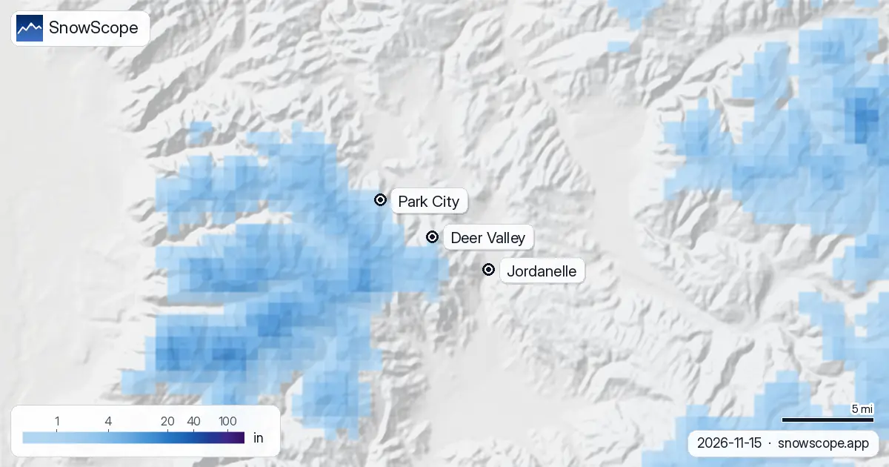

Deer Valley (Utah), condiciones para esquiar: ¿ya hay nieve? (13 de noviembre de 2026)
¿Hay nieve en Deer Valley? Todavía no, al menos no para esquiar. Nuestro mapa de nieve muestra un rastro, 0,4 in (1 cm), cerca de la cima a 9,600 ft, y suelo desnudo a media montaña y en las laderas bajas. El temporal del fin de semana debería cambiar primero lo alto: unas 4 in (11 cm) cerca de la cima. La parte baja de la estación, junto al embalse de Jordanelle, queda por debajo de la cota de nieve y recibe sobre todo lluvia.
Consulta la previsión de nieve en tiempo real de Deer Valley en la app SnowScopeEspesor de nieve, alertas de nieve polvo y mapa 3D, gratis.
La montaña, de Empire hasta Jordanelle
Deer Valley es la estación solo para esquiadores vecina de Park City, sin snowboards en sus remontes. Ha crecido hacia el este: el nuevo lado de East Village baja ahora hacia el embalse de Jordanelle. En nuestra cartografía eso da 117 mi (189 km) de pistas y 37 remontes, de unos 6,400 ft en el punto más bajo a 9,600 ft cerca de lo alto de Empire Canyon y Bald Mountain, unos 3,100 ft de desnivel.
Ese extremo bajo del este importa este fin de semana. Es la parte de Deer Valley más cercana a la lluvia.
Este fin de semana, sector a sector
El temporal entra entre la noche del viernes y el sábado. Nuestras cifras para los próximos dos días: unas 4 in (11 cm) cerca de la cima, 3 in (7 cm) a media montaña hacia 8,000 ft, y nada que cuaje a 6,400 ft. Las previsiones que comprobamos dan de 3 a 9 in para la parte alta y la oficial unas 3 in, así que nuestra cifra está en medio.
La cota de nieve es la línea clave: unos 6,700 a 7,600 ft. Por encima, alrededor de Empire y Bald Mountain, el temporal cae como nieve. Por debajo, en el lado de Jordanelle y en las pistas bajas, cerca de dos tercios deberían ser lluvia.
El mapa, dibujado para el domingo tras el temporal, muestra otra cosa que los de aquí conocen bien: la nieve más abundante cae en el alto Wasatch al oeste, y Deer Valley queda en el borde este del blanco. La cresta se sirve primero.
La semana que viene: más frío y un margen amplio
Tras el fin de semana el aire se enfría y la cota de nieve baja hasta unos 6,200 a 6,900 ft, cerca del pie de la estación. En siete días nuestros totales llegan a 11 in (29 cm) cerca de la cima, 7,5 in (19 cm) a media montaña y 2 in (5 cm) en la base.
Prepárese para cambios. Para la parte alta, las previsiones que comprobamos van de 8 a 29 in en la semana, un margen muy amplio para los días después del temporal. Vuelva a mirar en dos o tres días: son los temporales siguientes los que podrían construir una base de verdad.

Cómo son aquí las buenas condiciones
Tomemos 20 in (50 cm) en el suelo como umbral para esquiar bien. En nuestros 46 inviernos pasados (1980-81 a 2025-26) la parte alta de Deer Valley los tiene durante 19 semanas en 9 de cada 10 inviernos, la media montaña durante 14 semanas y las laderas más bajas solo durante 3. La mejor semana cerca de la cima es la 12, a finales de marzo, con un espesor mediano de 93 in (237 cm).
Noviembre es pronto en esa historia: un noviembre normal tiene 13 in (33 cm) cerca de la cima, 8 in (21 cm) a media montaña y 4 in (10 cm) en la base, y la primera nieve que dura suele llegar hacia el 12 de octubre arriba y el 24 de octubre abajo. Diciembre suele traer 38 in (96 cm) cerca de la cima y 15 in (37 cm) en la base. El invierno pasado fue el más flojo de nuestros 46 a todas las alturas, con un pico de 57 in (145 cm) cerca de la cima y de 12 in (30 cm) en la base.
Consejos para esquiadores
- Deer Valley es solo para esquiadores: los snowboarders van al vecino, Park City Mountain.
- Las primeras semanas abren antes las pistas altas y las de nieve artificial; las laderas bajas de East Village necesitan un tiempo más frío.
- Antes de subir con pieles o salir de la estación, lea el boletín del Utah Avalanche Center: la primera nieve del Wasatch suele convertirse en capa débil.
Más mapas (sitios externos)
Referencias y créditos
- Deer Valley Resort, web oficial (apertura, remontes, East Village, solo esquiadores) www.deervalley.com/
- Utah Avalanche Center, boletines de aludes del Wasatch utahavalanchecenter.org/
Sobre estas cifras
Cifras de nieve: el modelo de nieve de SnowScope, pasada del 12 de noviembre de 2026, a tres alturas de la estación (valores para la zona, no la estaca de nieve de la estación), y nuestro histórico de nieve, 46 inviernos pasados (1980-81 a 2025-26), un modelo del pasado corregido por altitud. Pulgadas y pies están redondeados de valores métricos. Cota de nieve, parte de lluvia y rango de comparación: previsiones meteorológicas independientes y la previsión oficial de EE. UU. leídas a las mismas alturas, el control que pasa cada artículo de SnowScope antes de salir. Longitud de pistas y número de remontes: cartografía de OpenSkiMap. Las previsiones cambian: mire el mapa antes de ir.
Boletines oficiales de aludes: Utah Avalanche Center
Citar este informe
Para investigación, docencia o prensa: cifras y gráficos reutilizables libremente bajo CC BY 4.0 con esta cita.
SnowScope (2026), Deer Valley (Utah), condiciones para esquiar: ¿ya hay nieve? (13 de noviembre de 2026), https://snowscope.app/blog/es/2026/11/deer-valley-utah-ski-conditions-13-november-2026.html, consultado el 2026-11-13
SnowScope (Atlas Labs). (2026, November 13). Deer Valley (Utah), condiciones para esquiar: ¿ya hay nieve? (13 de noviembre de 2026). SnowScope snow reports. https://snowscope.app/blog/es/2026/11/deer-valley-utah-ski-conditions-13-november-2026.html
BibTeX
@misc{snowscope2026deervalleyutahskiconditi,
author = {{SnowScope (Atlas Labs)}},
title = {Deer Valley (Utah), condiciones para esquiar: ¿ya hay nieve? (13 de noviembre de 2026)},
year = {2026},
month = nov,
howpublished = {\url{https://snowscope.app/blog/es/2026/11/deer-valley-utah-ski-conditions-13-november-2026.html}},
note = {Published 2026-11-13 18:32 UTC; accessed 2026-11-13}
}· CC BY 4.0 · Métodos, datos y herramientas →
Deer Valley: nieve y temperatura según la altura, este invierno vs el pasado (herramientas) →
Sigue Deer Valley
Gratis: un aviso cuando llega la nieve y la previsión cada mañana.
Más partes de nieve

En los próximos días la isoterma de 0 °C en el oeste de EE. UU. debería moverse entre 8333 ft (2540 m) y 13.780 ft (4200 m), según nuestra previsión. …

¿Es un buen comienzo de invierno en el oeste de EE. UU.? 5 estaciones en el oeste de EE. UU., 46 inviernos pasados, una fecha: así queda hoy. …

Parte de nieve en el oeste de EE. UU., 11 de noviembre. Hasta el 14 de noviembre la previsión da 17 in (43 cm) en Mt. Shasta Ski Park, 15 in (39 cm) …